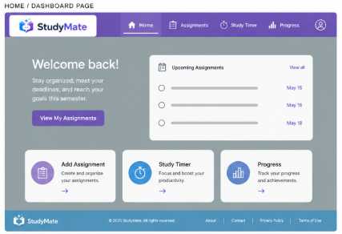

Overview
Purpose
StudyMate is a web application that helps college students organize assignments, exams, and study sessions all in one place! The goal wil be to make coursework easier to organize and for students to stay on top of deadlines.
Audience
The application is targeted to specifically college students or students that use online applications to organize school assignments, but this app will centralize a location for all a student needs to make a semester successful.
Dynamic elements
Assignment management: Students will be able to add, edit, delete, and mark assignments as completed on a form that can adapt for each course.
Students will be able to filter and sort assignments by course and due date or priority of urgency. All will be done without needing to reload the page.
There will be a progress bar with statistics automatically updating as assignments are completed and it will be able to calculate student's grades based on assignments completed.
There will be a countdown study timer for students to study for a certain amount of time.
Interactive Nav and Menu on Homepage
Branding
Website Logo
Style Guide
Color Palette
#7c60be-nav and menu
#589EC6-Footer
#899491-Main background
Palette URL: https://coolors.co/899194-8379a9-7c60be-6a7fc2-589ec6| Primary | Secondary | Accent 1 | Accent 2 |
|---|---|---|---|
| [#899194] | [#7C60be] | [#589EC6] | [#6A7FC2] |
Pseudocode for your project
Add Assignement- When user submits the assignment form: Get title, course, and due date from form Create a new assignment object Add assignment to list (array) Save updated list to local storage Update the page to show all assignments
Displaying Assignments: Clear the current assignment display For each assignment in the list: Create a new HTML element Show assignment title, course, and due date If assignment is completed: Style it as completed (gray or crossed out) Add element to the page
Complete Assignments: When user clicks "complete" button: Find the assignment in the list using its ID Change completed status to true Save updated list to local storage Refresh the display
Study Timer: When user clicks Start: Every 1 second subtract 1 from time remaining and then update timer display and once the timer reaches 0: Stop the timer and Show a break message.
Wireframes
Create wireframes for your project page(s). One for each page and list them here.
Home Page/Dashboard
[Any additional details about home that the wireframe does not make clear]

Page 1

Page 2